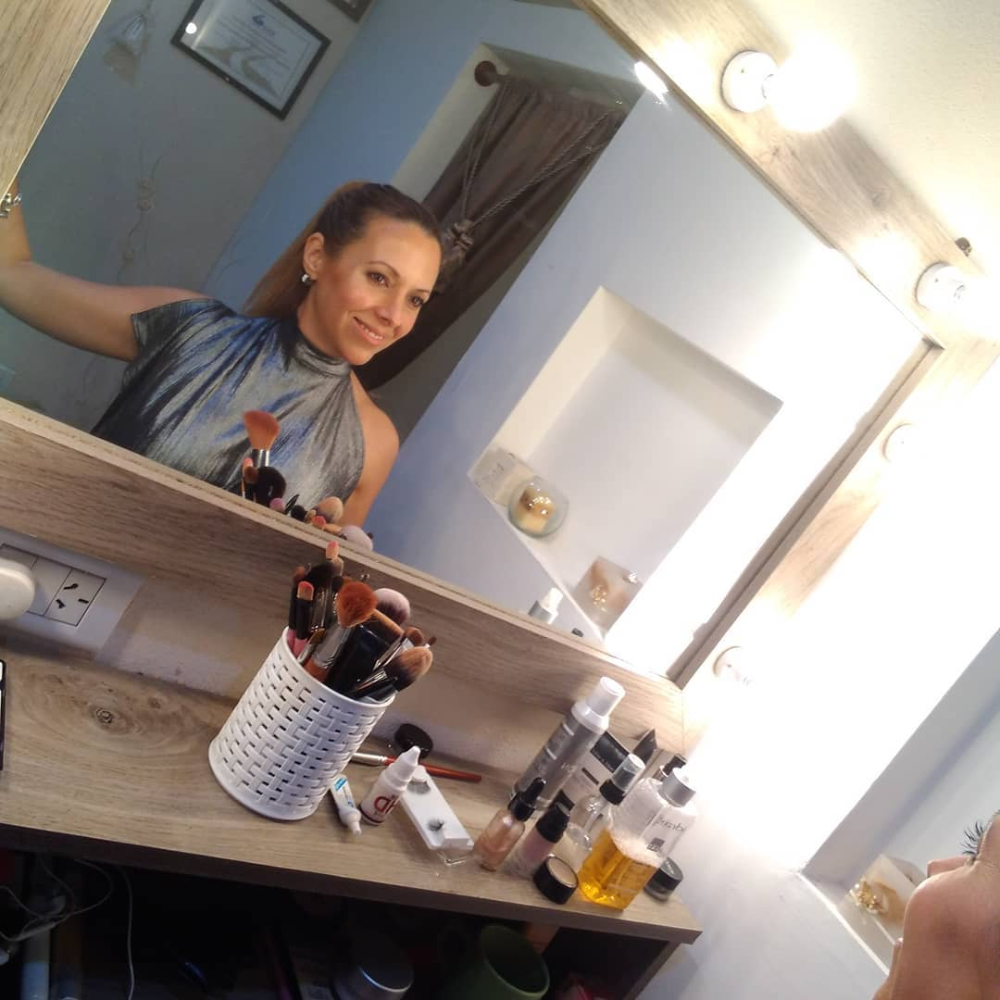

Quién Soy
¡Hola! Mi nombre es Natalia Sosa Carosiele
Desde 1995 dedicada con pasión, profesionalismo y responsabilidad al mundo de la moda, belleza y estética.
- Dermatocosmiatría
- Maquilladora Profesional
- Esteticista
- Productora de Desfiles de Moda
Me capacité en las mejores escuelas de estética, Hospital Israelita, Pirovano, UBA y reconocidos centros médicos, congresos nacionales e internacionales, como The International Congress of Esthetics and Spa Miami, International Beauty Shows New York, entre otros.
Mis escuelas de maquillaje fueron Mabby Autino, Kryolan Argentina, Oscar Mulet, Natacha Nina, y otras más.
Mis experiencias laborales, a lo largo de toda mi carrera fueron maravillosas, les señalo algunas de ellas. Como maquilladora de tv en Utilísima, América, Canal 9, Metro, PYE Política y Economía, junto a los reconocidos periodistas y personajes de la política. El Gourmet. Desfiles de moda con Giordano, en Punta del Este, Pinamar, El Calafate, Buenos Aires Moda, BAF WEEK, etc. Campañas de moda de lenceria, ropa deportiva, novias, alta costura, accesorios. Maquillajes sociales, para novias, madrinas, 15 años, y mucho más.
Como cosmiatra, trabajé en centros médicos, realizando tratamientos faciales y corporales.
partir de 2006 llevo mi centro de estética en Lanús Oeste.